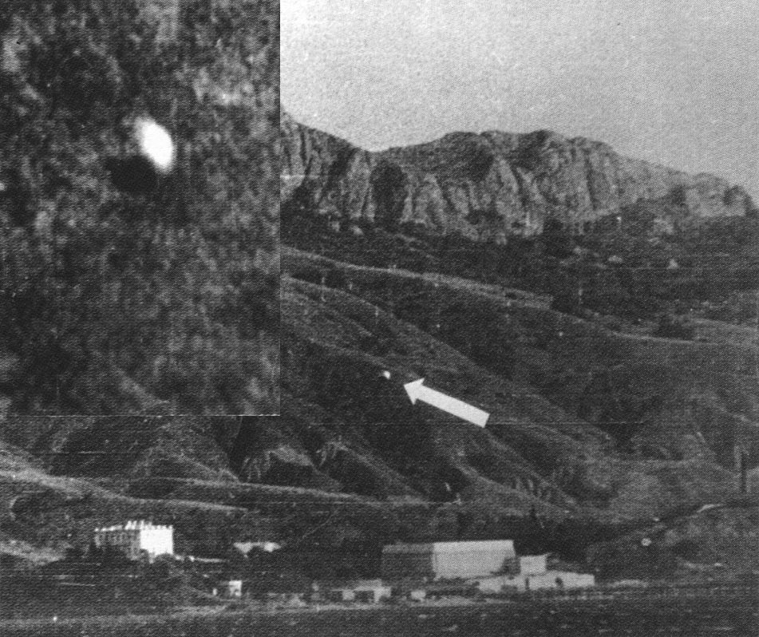

L'ovni phographié à I-Petry en Crimée
Photographie (ci-contre) d'un ovni à I-Petry (Crimée).
En LouisianneStanton T. Friedman rencontre le directeur
d'une chaîne de télévision qui lui suggère au cours d'une discussion de se mettre en rapport avec un certain Jesse A. Marcel, qui aurait eu entre les mains, lorsqu'il était à l'armée, des morceaux
d'une soucoupe volante qui l'intéressent.
Le suédois Anders Liljegren découvrira que l'armée de l'air suédoise avait créé un bureau d'enquête lors des
observations d'aéroplanes de .